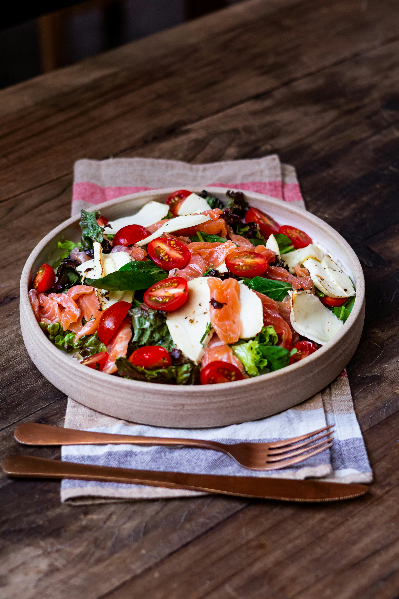

Caprese Salad

Description
Caprese Salad is a simple, yet elegant Italian dish that showcases the freshness of ripe tomatoes, creamy mozzarella cheese, and aromatic basil leaves. Drizzled with olive oil and a touch of balsamic vinegar, this salad is light, refreshing, and perfect as an appetizer or side dish. The combination of flavors is a celebration of summer produce and the essence of Italian cuisine.
Ingredient
- 4 ripe tomatoes, sliced
- 250g fresh mozzarella, sliced
- Fresh basil leaves
- 2 tbsp olive oil
- Balsamic vinegar (optional)
- Salt and pepper to taste
Steps
- Layer ingredients: Arrange tomato and mozzarella slices on a plate, alternating them.
- Add basil: Tuck fresh basil leaves between slices.
- Season: Drizzle with olive oil, balsamic vinegar, salt, and pepper.
- Serve: Enjoy immediately as a fresh appetizer or side dish.